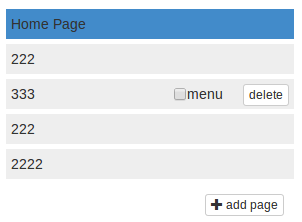
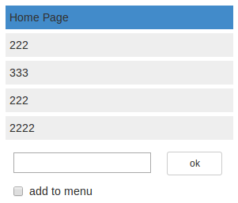
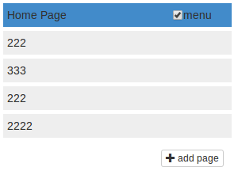
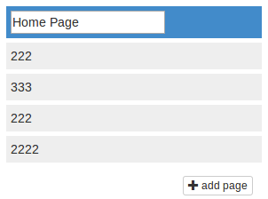

Основное
- Реализовать компонент список страниц: добавление, удаление, редактирование.
- По ховеру показывается кнопка удалить и галочка.
- По клику происходит выделение, по двойному клику переходит в режим редактирование, в инпут устанавливается фокус.
- По клику на add page. Появляется форма добавление страницы, в инпут устанавливается фокус.
- При нажатии на Enter в инпутах происходит сохранение.
- В списке с самого начала есть элемент который нельзя удалить (homepage) его кнопку удаление не показывать.




Дополнительное
- Реализовать возможность менять порядок элементов с помощью drag and drop.